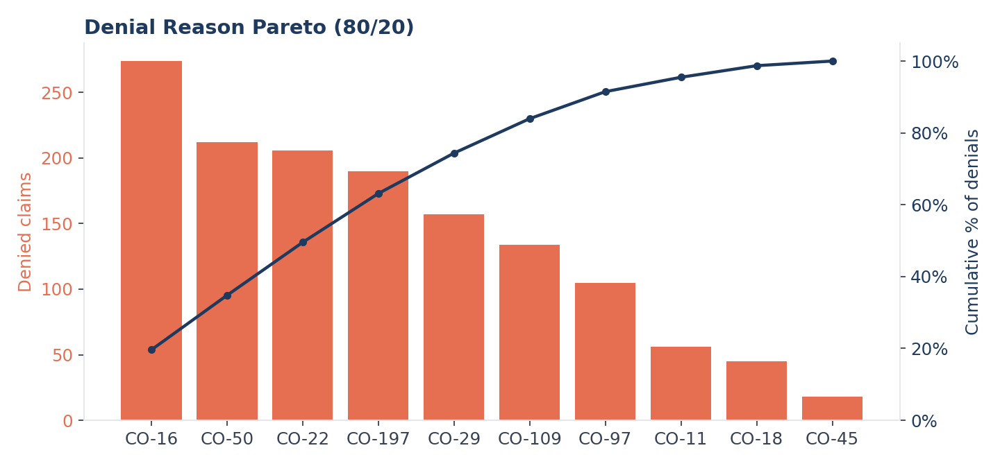
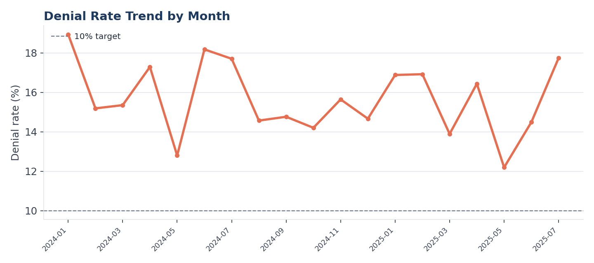
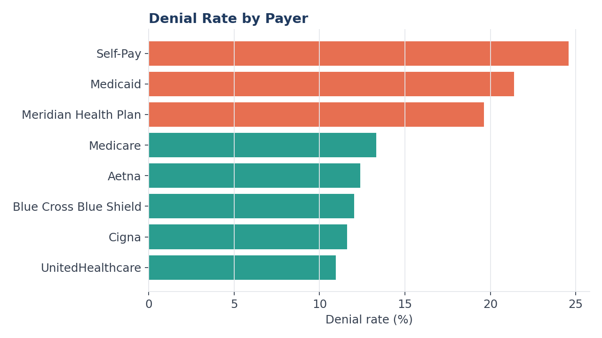
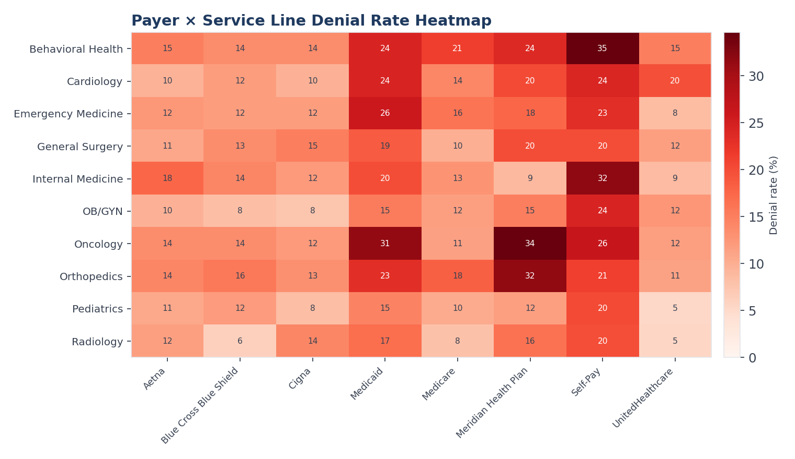
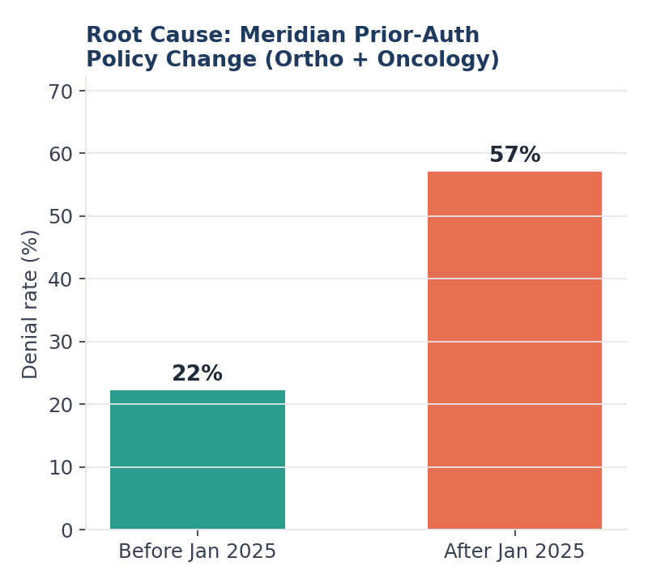
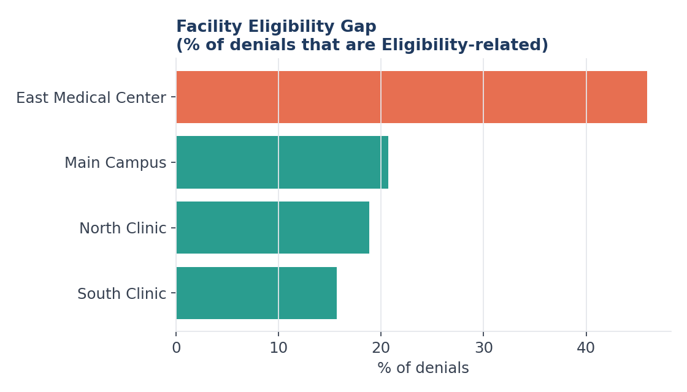
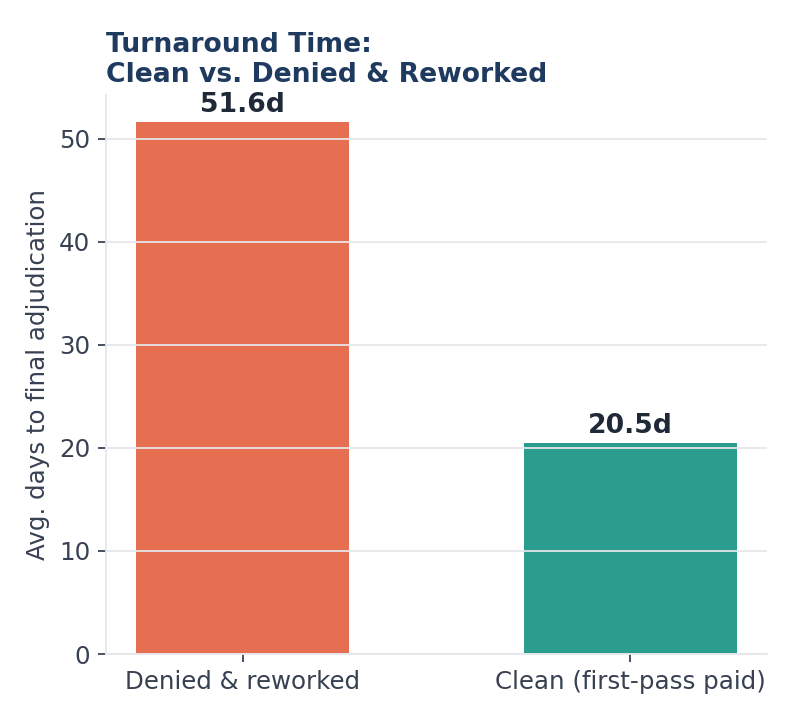
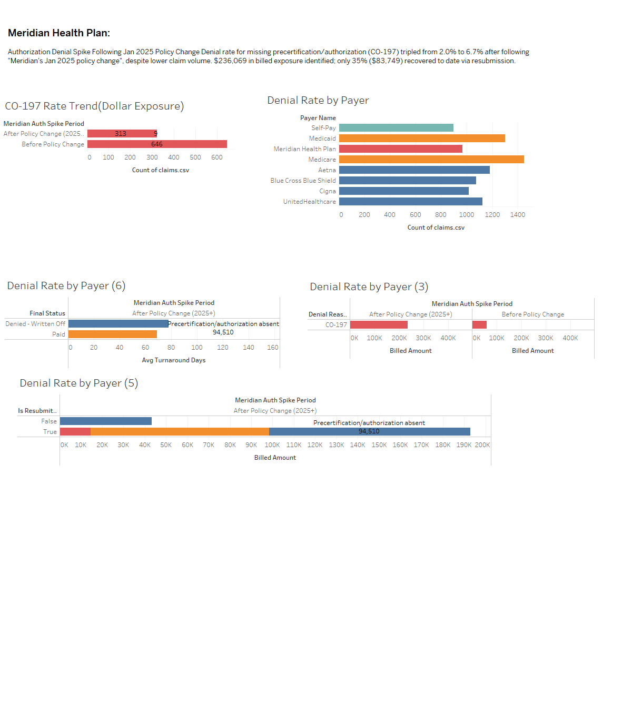

Claims Denial & Revenue Cycle Analysis
Analyzes denial rates by payer, service line, and reason code across 9,000
claims (Jan 2024–Jun 2025, ~$50.2M billed) to move past "denials are up" and
into specific, ownable root causes: a payer's prior-authorization policy
change, a clinical documentation gap in one service line, and a front-desk
eligibility-verification gap at one facility. Built on a synthetic claims
dataset with a documented, reproducible generation process (see the data
dictionary in /docs).
Where the denials come from: reason code Pareto
Ten reason codes account for every denial in the dataset, but just the top four — Missing Information, Medical Necessity, Eligibility, and Authorization — drive roughly two-thirds of all denials.


Denial rate by payer, and where payer × service line intersect
Self-Pay and Medicaid run the highest overall denial rates, but the sharpest, most actionable signal is in the payer × service line breakdown below — Meridian Health Plan's Orthopedics and Oncology cells stand out well above every other combination in the grid.


Root cause confirmation
| Root cause | Evidence | Interpretation |
|---|---|---|
| Meridian prior-authorization policy change | Ortho/Oncology denial rate: 21.4% before 2025-01-01 → 55.9% after; 58% of post-change denials are Authorization (CO-197) | Confirmed — a specific, dated payer policy shift, not a general quality drop |
| Behavioral Health documentation gap | Highest service-line denial rate (20.0%); 44.9% of its denials are Medical Necessity (CO-50), roughly 2x other service lines | Confirmed — a clinical documentation issue, not a billing issue |
| East Medical Center eligibility gap | Highest facility denial rate (19.6% vs. 15.2% at Main Campus); 46.0% of its denials are Eligibility-related vs. 20.7% elsewhere | Confirmed — a front-desk registration/verification issue, cheapest category to fix |


Cost of denials: turnaround time & revenue impact
Denied-and-reworked claims take 2.5x longer to resolve than clean claims — that's cash sitting in A/R, not just a quality metric.

| Revenue at risk | |
|---|---|
| Billed charges denied on first pass | $8.24M |
| Billed charges permanently written off | $6.20M |
| Billed charges pending appeal | $225K |
| Est. recoverable via Meridian pre-auth fix | ~$250K |
Opportunity sizing — cut each category's denials in half
| Denial category | Denied claims | Billed $ at risk | Est. $ recovered if halved |
|---|---|---|---|
| Eligibility | 340 | $2.13M | ~$692K |
| Missing Information | 274 | $1.57M | ~$509K |
| Medical Necessity | 212 | $1.02M | ~$332K |
| Timely Filing | 157 | $956K | Not appeal-recoverable — fix at submission stage |
Meridian Health Plan: Full Dashboard Summary
Recommendations
- Get Meridian's updated prior-authorization policy in writing and build a pre-submission auth checklist specifically for Orthopedics and Oncology claims going to that payer.
- Partner with Behavioral Health clinical leadership on documentation templates that pre-empt medical-necessity criteria — this is a clinical fix, not a billing-team fix.
- Audit East Medical Center's front-desk eligibility verification workflow — typically the cheapest denial category to fix, since it's process/training rather than a systems change.
- Stop appealing Timely Filing and Duplicate Claim denials (1.3% and 4.4% ultimate recovery rate); redirect that staff time upstream to submission-deadline alerts instead.

Since Meridian's January 2025 authorization policy change, the CO-197 denial rate tripled from 2.0% to 6.7%, representing $236,069 in billed exposure. Only 35% ($83,749) has been recovered to date via resubmission.
Synthetic data, generated with a fixed random seed and documented root causes
(see docs/data_dictionary.md). Not derived from any real
hospital's, payer's, or patient's records.